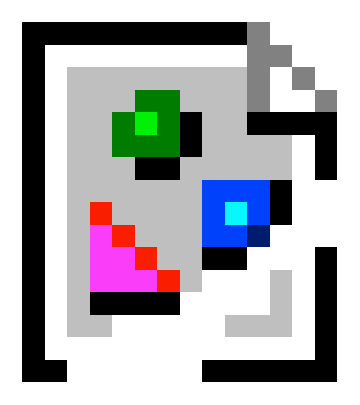

Some parts of this text are by Creative Bloq
HTML:
HTML stands for HyperText Markup Language, and provides a way for the web designer to tell your web browser how to treat a particular piece of content.
HTML consists of multiple tags that allow the designer to mark up different bits of content to tell the browser what to do, for instance <img> tells the browser "Hey, there's an image here", referenced by "src=" inside the tag itself.
So, to load an image, you would do something like this:
<img src="broken.png">
And you'd get this! Obviously you can replace "broken.png" with your own image, or a URL to an image hosted elsewhere.
<p> is used to display text. With most HTML tags, you need a closing tag at the end, which is the same tag but with a /, like this: </p>
You can view a huge list of elements that HTML has on Mozilla's web docs centre here.
CSS:
You can't just make a pretty webpage with HTML alone though, you need something to go along with it to make it look real nice, instead of just a page of text.
This is where CSS comes in. CSS, standing for Cascading Style Sheets, gives designers a method of creating sets of rules to control how a browser displays things.
There are two ways of doing this - by doing it inline, or by doing it in an external CSS file.
Inline:
Inline isn't usually recommended unless you are doing something small that won't need to be changed or placed on to other pages. An example of inline CSS would be like this:
<p style="color:blue;">Enter some text here...</p>
Which results, as you'd expect:
Enter some text here...
External CSS:
The much more recommended way of loading CSS would be to stick it in a CSS file, and then link that CSS to the document. You'd do this by typing this into your webpage's header:
<link rel="stylesheet" href="stylesheet.css">
You would then make any changes to the CSS in that file and refresh the page. Sometimes the browser might not update the CSS automatically, this can be fixed by holding Shift when refreshing.
Take a look here to see the CSS for this website.
Definitions from:
Techopedia (Front-End Developer)
Techopedia (Back-End Developer)
HTML: Hypertext Markup Language, a standardised system for tagging text files to achieve font, colour, graphic, and hyperlink effects on WWW pages.
CSS: Cascading Style Sheets. These are used to format the layout of web pages, and can be used to define text styles, table sizes, and other aspect of web pages like locations of borders and font sizes. CSS is great in that it can modify multiple pages at once instantly when used externally.
Front-End Developer: a developer that converts webnsite design files (so sketches, wireframes etc.) into raw HTML, CSS, JavaScript etc. This includes things like buttons, images, content, links, the basics. The result is then used by a back-end developer. Whatever the front-end developer creates, the user of the website will see.
Back-End Developer: a developer that connects things like databases and business logics (like a payment system for example) to the front-end, and tpyically have skills in areas such as C++, C#, Java etc. These developers will maintain the entire back-end of a system and also do any debugging and testing of the back-end applications and systems.
iFrames: Not an iOS application, instead iFrames allow you to insert other webpages into the webpage you are currently on. For instance, you can use it to embed a YouTube video into your page without the user having to click off to YouTube and leave your site. You can find an example of this on the Tutorials page, listed above.
Web Design (and web designer): Web design involves making a page of text according to the rules of the Hypertext Markup Language. You can then add CSS and such to it after that. A web designer is someone who does this. Web designers typically do not hard-code HTML nowadays, instead opting for online services such as Wordpress, Squarespace, or using desktop applications such as Adobe Dreamweaver. This website however was hard-coded in Microsoft Visual Studio Code.
Web Development is like design, but actually making the website work and do the things you want it to do. Web development can involve anything from building a simple web page to developing massive social network sites, business apps, and web-based apps.